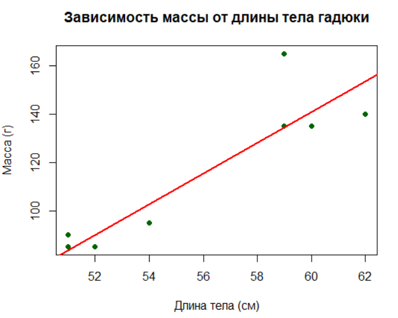
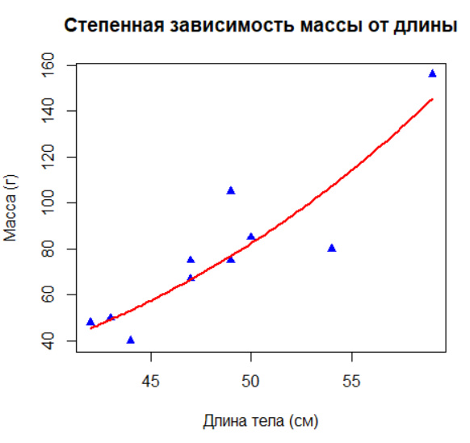
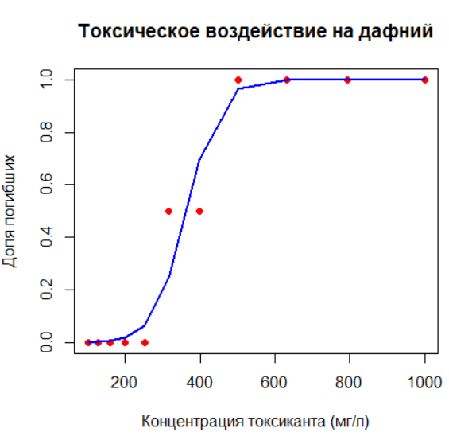
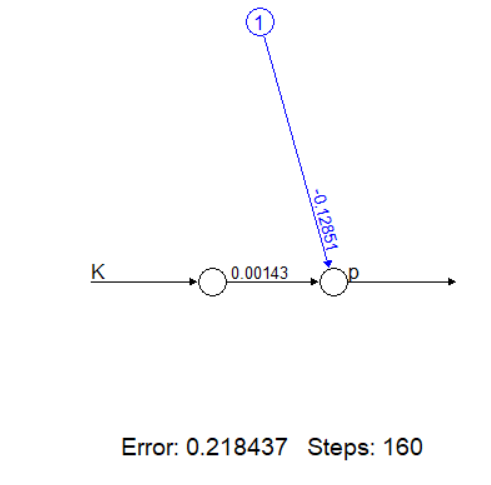
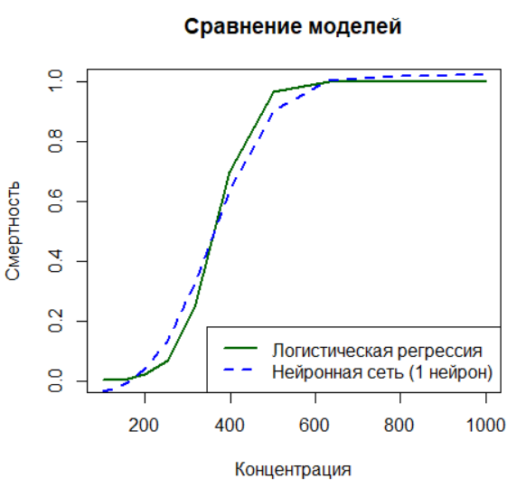
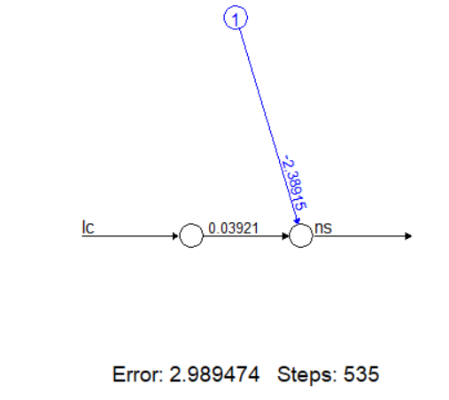
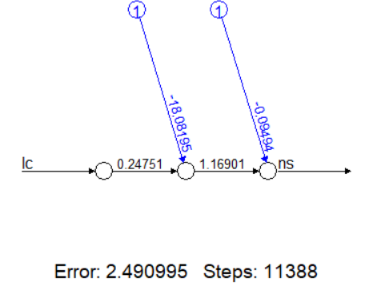
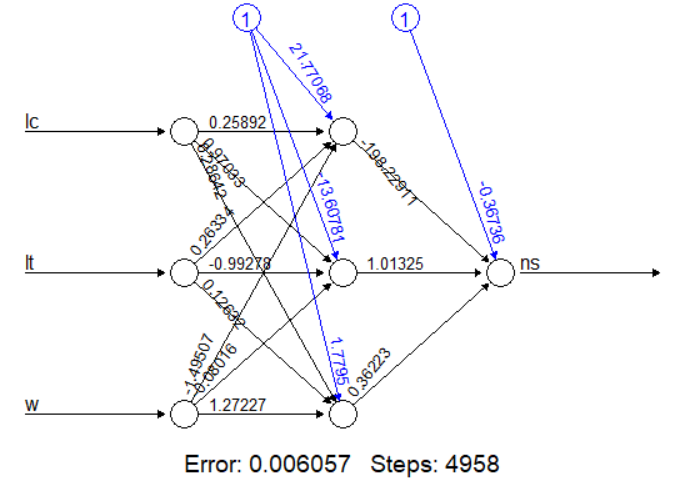
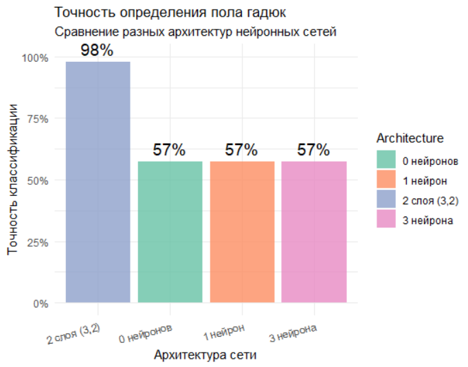

# ЗАГРУЗКА БИБЛИОТЕК И НАСТРОЙКА СРЕДЫ ================================
library(neuralnet) # Для построения нейронных сетей
library(ggplot2) # Для продвинутой визуализации (в данном скрипте не используется напрямую)
# Установите свою рабочую директорию (где лежат файлы данных)
# setwd("C:/ВАША_ДИРЕКТОРИЯ/")3 Нейронные сети в экологии: практическое введение
3.1 Введение
Это практическое занятие — про то, как из разрозненных чисел сделать внятную экологическую историю и как перейти от простых регрессий к нейронным сетям, оставаясь честными перед данными. Мы используем R не из эстетики, а из прагматики: он позволяет прозрачно воспроизводить анализ, контролировать каждую трансформацию и быстро проверять гипотезы. В основе занятия — логика и примеры из статьи Андрея Викторовича Коросова «Нейронные сети в экологии: введение» (Принципы экологии, 2023, №3, 76–96). Там хорошо показан путь от классических линейных моделей к нелинейным конструкциям и дальше — к искусственным нейронным сетям, способным решать задачи классификации и прогнозирования. Мы пойдём тем же маршрутом, но с учебной расстановкой акцентов: сначала поймём, как работает «молоток» (регрессия), прежде чем брать в руки «многофункциональный инструмент» (сеть).
Задача занятия двоякая. Во‑первых, усвоить минимально достаточный набор статистических практик, чтобы не путать «эффект» с «удачным совпадением»: проверка предпосылок, визуальная диагностика, простые и понятные метрики качества, раздельные обучающие и тестовые выборки. Во‑вторых, увидеть, как усложнение модели должно быть мотивировано данными и биологией, а не нашей любовью к сложным методам. Если более простая модель объясняет всё, что вам нужно для решения прикладной задачи, смело берите её — мозг склонен влюбляться в красивое, но нам нужна работающая гипотеза.
Структура занятия отражает эволюцию инструментов. Начнём с линейной регрессии на предельно понятном примере: связь массы и длины. Здесь важны не только коэффициенты и p‑значения, но и остатки, проверка линейности, гомоскедастичность, доверительные интервалы. Затем познакомимся с численной оптимизацией: когда аналитического решения нет, мы используем итерационные алгоритмы (nls) и учимся задавать стартовые значения, контролировать сходимость и чувствительность. Далее — множественная регрессия и вопрос интерпретации: что реально добавляет предиктор, а что «ездит зайцем» на коллинеарности. Оттуда естественно перейти к нелинейным зависимостям: аллометрия, линеаризация через логарифмы, сопоставление качества моделей не только по R², но и по AIC, и — что особенно важно — по поведению остатков. Логистическая регрессия вводит нас в мир пороговых процессов и бинарных исходов: S‑кривая, L50, ROC/AUC, калибровка вероятностей — всё это работает одинаково хорошо для токсичности дафний и для созревания по длине.
Когда базовые кирпичики стоят, делаем шаг к нейронным сетям. Сначала показываем, что сеть без скрытых слоёв фактически воспроизводит линейную модель. Затем добавляем один скрытый нейрон и видим, как появляется возможность описывать нелинейности и пороговые эффекты. Дальше — классификация по нескольким признакам и небольшие архитектуры: оцениваем точность, избегаем утечки информации, фиксируем случайные зерна, обязательно сравниваем с простыми бэйзлайнами, чтобы не путать «мощнее» с «лучше». В финале — пример пространственного моделирования численности по биотопам: разделение на train/test, прогноз на новых условиях, разговор о переносимости моделей и ограничениях, без которых любые «красивые карты» остаются просто эстетикой.
Организация работы предельно проста. Даны три версии скрипта: KOROSOV.R — максимально близко к оригиналу; KOROSOV_updated.R — тот же код с подробными комментариями и пояснениями (основной учебный вариант); KOROSOV_visual.R — дополненный продвинутой визуализацией и небольшой аналитикой качества. Для запуска понадобятся данные vipkar.csv и kihzsdat.csv, корректная рабочая директория в setwd() и набор пакетов (как минимум neuralnet и ggplot2). Мы сознательно держим зависимости минимальными, чтобы главный фокус был на методе и интерпретации, а не на обвязке.
Чему вы научитесь и на что обращать внимание. Во‑первых, всегда проверять, что модель решает именно ваш вопрос: чёткая формулировка задачи до выбора алгоритма экономит половину времени. Во‑вторых, всегда показывать эффект и неопределённость: коэффициенты с интервалами, калибровка вероятностей, ошибки прогноза на независимых данных. В‑третьих, всегда сравнивать с простым бэйзлайном: если «сеть» не лучше честной регрессии на чистых признаках, значит, проблема не в архитектуре, а в данных или постановке. И да, старайтесь говорить языком биологии: «параметр b близок к 3» — это про объём, «L50 сдвинулся» — про созревание, «AUC высок, но калибровка плывёт» — про надёжность решений на уровне индивидуальных вероятностей.
Наконец, про дисциплину и воспроизводимость. Фиксируйте seed, документируйте версии пакетов и исходные предположения, храните все промежуточные шаги в скриптах. Это скучно минуту, но экономит дни. И даже когда вы дойдёте до «сетей», помните: сложная модель — это не билет в истину, а всего лишь более гибкий аппроксиматор. Хорошая практика — держать рядом простой, интерпретируемый аналог и объяснять расхождения между ними. Тогда ваши результаты будут не просто «работать», а выдерживать обсуждение с биологами, инженерами и управленцами — то есть приносить пользу за пределами экрана.
Для работы скрипта:
Скачайте файлы данных (vipkar.csv и kihzsdat.csv)
Установите рабочую директорию в setwd()
Установите необходимые пакеты :
install.packages(c("neuralnet", "ggplot2"))
3.2 ЛИНЕЙНАЯ РЕГРЕССИЯ
В этом разделе мы изучим основы экологического моделирования на примере зависимости массы тела гадюки от ее длины. Вы построите простую линейную регрессионную модель, визуализируете данные и линию регрессии, а также интерпретируете результаты с помощью функции summary().
Загружаем данные
# Данные: масса (w) и длина тела (lt) гадюк (в см и граммах)
w <- c(85, 90, 85, 95, 95, 135, 165, 135, 140)
lt <- c(51, 51, 52, 54, 54, 59, 59, 60, 62)Строим и запускаем модель \[ w_t = a_0 + a_1 \cdot l_t \]
где: - \(w_t\) — зависимая переменная, - \(a_0\) — свободный член, - \(a_1\) — коэффициент регрессии, - \(l_t\) — независимая переменная.
# Построение линейной модели: w = a0 + a1*lt
lreg <- lm(w ~ lt)Выведем результаты модели
# Просмотр результатов модели:
summary(lreg) # Обратите внимание на коэффициенты и p-значенияНа экране появится:
Call:
lm(formula = w ~ lt)
Residuals:
Min 1Q Median 3Q Max
-13.452 -7.585 -4.868 1.490 30.623
Coefficients:
Estimate Std. Error t value Pr(>|t|)
(Intercept) -240.766 64.457 -3.735 0.007308 **
lt 6.358 1.153 5.516 0.000891 ***
---
Signif. codes: 0 ‘***’ 0.001 ‘**’ 0.01 ‘*’ 0.05 ‘.’ 0.1 ‘ ’ 1
Residual standard error: 13.81 on 7 degrees of freedom
Multiple R-squared: 0.813, Adjusted R-squared: 0.7863
F-statistic: 30.43 on 1 and 7 DF, p-value: 0.0008911Мы получили результаты линейной регрессии, где зависимая переменная — масса тела гадюки (w), а независимая переменная — длина тела (lt). Разберем каждый параметр:
1. **Call (Вызов модели):**
`lm(formula = w ~ lt)`
Это просто напоминание, какая модель была построена. Здесь указано, что мы моделировали зависимость массы (w) от длины тела (lt) с помощью линейной регрессии.
2. **Residuals (Остатки):**
Остатки — это разница между наблюдаемыми значениями массы и предсказанными моделью значениями. Они показывают, насколько хорошо модель описывает данные.
`Min`: минимальный остаток = -13.452 (наибольшее недооцененное значение)
`1Q`: первый квартиль = -7.585 (25% остатков меньше этого значения)
`Median`: медиана остатков = -4.868 (середина распределения остатков)
`3Q`: третий квартиль = 1.490 (75% остатков меньше этого значения)
`Max`: максимальный остаток = 30.623 (наибольшее переоцененное значение)
Распределение остатков: медиана немного смещена влево (отрицательное значение), а размах между 1Q и 3Q составляет примерно 9 единиц. Это может указывать на легкую асимметрию, но выборка мала.
3. **Coefficients (Коэффициенты):**
`(Intercept)`: свободный член (a0) = -240.766. Это предсказанное значение массы при длине тела, равной нулю. Биологически это не имеет смысла (длина не может быть нулевой), но это математическая особенность модели.
`lt`: коэффициент регрессии (a1) = 6.358. Это означает, что при увеличении длины тела на 1 см масса тела увеличивается в среднем на 6.358 г.
Для каждого коэффициента приведены:
`Estimate`: точечная оценка коэффициента.
`Std. Error`: стандартная ошибка оценки коэффициента. Для intercept = 64.457, для lt = 1.153. Это мера изменчивости оценки.
`t value`: t-статистика. Рассчитывается как Estimate / Std.Error. Для intercept: -240.766 / 64.457 ≈ -3.735; для lt: 6.358 / 1.153 ≈ 5.516.
`Pr(>|t|)`: p-значение для проверки гипотезы о равенстве коэффициента нулю.
Для intercept: p=0.007308 (значим на уровне α=0.01, т.е. intercept статистически значимо отличается от нуля).
Для lt: p=0.000891 (значим на уровне α=0.001). Это означает, что длина тела значимо влияет на массу.
Значимость кодов: три звездочки (`***`) означают, что коэффициент значим на уровне 0.001.
4. **Residual standard error (Стандартная ошибка остатков):** 13.81 на 7 степенях свободы. Это мера разброса остатков. В среднем, предсказания модели отклоняются от реальных значений на ±13.81 г. Степени свободы (df) = n - 2 = 9 - 2 = 7 (n — количество наблюдений).
5. **Multiple R-squared (Коэффициент детерминации R²):** 0.813. Это означает, что 81.3% вариации массы тела объясняется длиной тела. Остальные 18.7% — это неучтенные факторы и случайная изменчивость.
6. **Adjusted R-squared (Скорректированный R²):** 0.7863. Этот показатель корректирует R² с учетом числа предикторов. Он полезен при сравнении моделей с разным числом предикторов. Здесь он немного меньше R², так как учитывает, что в модели один предиктор.
7. **F-statistic (F-статистика):** 30.43 на 1 и 7 степенях свободы. Проверяет гипотезу о том, что все коэффициенты (кроме intercept) равны нулю (т.е. модель не лучше, чем модель только с константой).
- p-value: 0.0008911 (крайне значимый), что означает, что модель в целом адекватна.
**Выводы:**
- Уравнение модели: `w = -240.77 + 6.36 * lt`
- Длина тела значимо влияет на массу (p<0.001).
- Модель объясняет 81.3% вариации массы.
- На каждый сантиметр длины тела масса увеличивается примерно на 6.36 г.
- Остатки модели показывают, что есть несколько точек, которые модель предсказывает с заметной ошибкой (особенно максимальный остаток в 30.6 г). Возможно, для более точного прогноза нужна нелинейная модель или учет дополнительных факторов.
**Рекомендации:**
- Проверить допущения линейной регрессии (нормальность остатков, гомоскедастичность) с помощью диагностических графиков.
- Рассмотреть возможность включения других переменных (например, возраста, пола) в модель.
- Убедиться, что в данных нет выбросов, которые могут влиять на коэффициенты.
# Визуализация зависимости
plot(lt, w,
main = "Зависимость массы от длины тела гадюки",
xlab = "Длина тела (см)",
ylab = "Масса (г)",
pch = 19, # Кружки вместо стандартных точек
col = "darkgreen")
abline(lreg, col = "red", lwd = 2) # Добавляем линию регрессии
3.3 ЧИСЛЕННАЯ ОПТИМИЗАЦИЯ
Здесь вы познакомитесь с численными методами оптимизации параметров моделей, которые применяются, когда аналитическое решение невозможно. На примере той же зависимости массы от длины вы подгоните параметры модели с помощью функции nls() и сравните результаты с аналитическим решением.
Аналитические методы дают точное решение в виде математической формулы, используя алгебраические преобразования и теоремы математического анализа. Они идеальны для простых моделей, где существуют явные решения, обеспечивая прозрачную интерпретацию параметров. В экологии такие методы применимы для базовых зависимостей типа линейной регрессии. Численные методы используются, когда аналитическое решение невозможно, и работают через последовательные приближения, начиная со стартовых значений и итеративно улучшая параметры модели. Они незаменимы для сложных экологических моделей с нелинейными зависимостями, взаимодействиями факторов и “шумными” полевыми данными, позволяя решать задачи, недоступные для аналитических подходов.
# Подгонка параметров через оптимизацию
nls_model <- nls(w ~ a0 + a1 * lt, start = list(a0 = 1, a1 = 1))
summary(nls_model)На экране появится:
Formula: w ~ a0 + a1 * lt
Parameters:
Estimate Std. Error t value Pr(>|t|)
a0 -240.766 64.457 -3.735 0.007308 **
a1 6.358 1.153 5.516 0.000891 ***
---
Signif. codes: 0 ‘***’ 0.001 ‘**’ 0.01 ‘*’ 0.05 ‘.’ 0.1 ‘ ’ 1
Residual standard error: 13.81 on 7 degrees of freedom
Number of iterations to convergence: 1
Achieved convergence tolerance: 3.247e-083.3.1 Интерпретация результатов модели
Мы построили линейную модель зависимости массы гадюки (w) от длины её тела (lt) по формуле:
w = a0 + a1 * lt
Ключевые параметры модели:
a0 (свободный член): -240.8 г
Это теоретическая масса при нулевой длине тела. Отрицательное значение указывает, что модель не подходит для очень молодых особей.a1 (коэффициент при lt): 6.36 г/см
Каждый дополнительный сантиметр длины тела увеличивает массу в среднем на 6.36 г.
Точность и значимость:
Оба коэффициента высоко значимы (p < 0.01), что подтверждает реальность зависимости.
Стандартная ошибка для a1 составляет 1.15 г/см - это значит, что реальное значение, вероятно, находится между 5.2 и 7.5 г/см.
Модель хорошо сошлась за 1 шаг (итерацию), что говорит об удачном подборе параметров.
Ошибка прогноза:
Среднее отклонение предсказаний от реальных значений - 13.8 г (стандартная ошибка остатков). Для особи массой 100 г это означает возможную ошибку прогноза около 14%.
Биологический смысл: Модель подтверждает сильную аллометрию - крупные гадюки имеют относительно большую массу тела. Каждый сантиметр длины добавляет около 6.4 г массы. Для особи длиной 55 см прогнозируемая масса составит: -240.8 + 6.36*55 ≈ 109 г.
##МНОЖЕСТВЕННАЯ РЕГРЕССИЯ
В этом разделе мы расширим модель, включив несколько факторов. Вы построите множественную регрессию, учитывающую одновременно длину тела и длину хвоста гадюки, и научитесь интерпретировать влияние нескольких предикторов на зависимую переменную.
# Добавляем новый признак - длину хвоста (lc)
w <- c(40, 156, 105, 85, 80, 50, 75, 48, 75, 67)
lt <- c(44, 59, 49, 50, 54, 43, 49, 42, 47, 47)
lc <- c(70, 78, 66, 90, 83, 70, 62, 75, 40, 80)Используя glm-функцию, построим модель с двумя предикторами: \[ w = a_0 + a_1 \cdot l_t + a_2 \cdot l_c \]
где: - \(w\) — масса гадюки, - \(l_t\) — длина тела гадюки, - \(l_c\) — длина хвоста гадюки, - \(a_0\) — свободный член (константа), - \(a_1\) — коэффициент регрессии при длине тела, - \(a_2\) — коэффициент регрессии при длине хвоста.
# Множественная регрессия: w = a0 + a1*lt + a2*lc
multi_reg <- glm(w ~ lt + lc)
summary(multi_reg)На экране появится:
Call:
glm(formula = w ~ lt + lc)
Coefficients:
Estimate Std. Error t value Pr(>|t|)
(Intercept) -191.2982 53.6908 -3.563 0.009183 **
lt 6.0308 1.1051 5.457 0.000949 ***
lc -0.3150 0.4133 -0.762 0.470913
---
Signif. codes: 0 ‘***’ 0.001 ‘**’ 0.01 ‘*’ 0.05 ‘.’ 0.1 ‘ ’ 1
(Dispersion parameter for gaussian family taken to be 270.9752)
Null deviance: 10132.9 on 9 degrees of freedom
Residual deviance: 1896.8 on 7 degrees of freedom
AIC: 88.832
Number of Fisher Scoring iterations: 23.3.2 Интерпретация результатов множественной регрессии
Мы исследовали зависимость массы гадюки (w) от длины тела (lt) и длины хвоста (lc) с помощью модели:
w = b0 + b1*lt + b2*lc
Ключевые выводы модели:
Длина тела (lt) сильно влияет на массу:
Коэффициент: +6.03 г/см
Каждый сантиметр длины тела увеличивает массу на ~6 г
Высокая значимость (p = 0.00095)
Длина хвоста (lc) не влияет значимо на массу:
Коэффициент: -0.315 г/см (незначимый)
p-значение 0.47 > 0.05 - статистически недостоверно
После учета длины тела, длина хвоста не добавляет информации
Свободный член (b0): -191.3 г
Отрицательное значение подтверждает нелинейность роста у молодых особей
Качество модели:
Модель объясняет значительную часть вариации:
Общая вариация (Null deviance) = 10132.9
Остаточная вариация (Residual deviance) = 1896.8 → Объяснено 81% вариацииAIC = 88.8 (ниже, чем у модели без lc - 92.1, что указывает на лучшее качество)
Модель быстро сошлась за 2 итерации
Биологическая интерпретация:
Масса тела определяется в основном длиной туловища, а не хвоста
Для прогноза массы достаточно учитывать только длину тела
Пример прогноза для особи (lt=50 см, lc=70 см):
-191.3 + 6.03*50 - 0.315*70 ≈ 111 г
Рекомендация: При изучении массы гадюк можно исключить длину хвоста из модели, так как она не вносит значимого вклада в предсказание. Основным морфометрическим показателем остается длина тела.
3.4 НЕЛИНЕЙНЫЕ ЗАВИСИМОСТИ
Экологические данные часто имеют нелинейный характер. Здесь вы смоделируете степенную зависимость (аллометрию) между массой и длиной тела, используя линеаризацию через логарифмирование, а затем визуализируете кривую модели.
# Часто в экологии связи имеют степенной характер: w = a0 * lt^a1
# Линеаризация через логарифмирование
log_model <- lm(log(w) ~ log(lt))
# Преобразование коэффициентов обратно
a0 <- exp(coef(log_model)[1]) # Переход от логарифмов
a1 <- coef(log_model)[2] # Показатель степени
# Визуализация степенной зависимости
plot(lt, w,
main = "Степенная зависимость массы от длины",
xlab = "Длина тела (см)",
ylab = "Масса (г)",
pch = 17,
col = "blue")
curve(a0 * x^a1, add = TRUE, col = "red", lwd = 2) # Кривая модели
3.5 ЛОГИСТИЧЕСКАЯ РЕГРЕССИЯ
Вы изучите моделирование пороговых эффектов в экологии на примере смертности дафний в зависимости от концентрации токсиканта. Построив логистическую регрессию, вы получите S-образную кривую, характерную для таких процессов.
# Пример: смертность дафний при разных концентрациях токсиканта
# Данные:
K <- c(100, 126, 158, 200, 251, 316, 398, 501, 631, 794, 1000)
p <- c(0, 0, 0, 0, 0, 0.5, 0.5, 1, 1, 1, 1) # Доля погибших
d <- data.frame(K, p)
# Построение логистической модели
logit_model <- glm(p ~ K, family = binomial(), data = d)
# Визуализация S-образной кривой
plot(d$K, d$p,
xlab = "Концентрация токсиканта (мг/л)",
ylab = "Доля погибших",
main = "Токсическое воздействие на дафний",
pch = 19,
col = "red")
lines(d$K, predict(logit_model, type = "response"),
col = "blue", lwd = 2, lty = 1)
3.6 ПЕРЕХОД К СЕТЯМ
Сделаем первый шаг к нейронным сетям, построив простейшую сеть без скрытых слоев (аналог линейной регрессии) для модели токсичности. Вы визуализируете структуру сети и убедитесь, что она дает результат, аналогичный линейной модели.
# Простейшая нейросеть (аналог линейной регрессии)
nn_simple <- neuralnet(p ~ K, data = d, hidden = 0)
# Визуализация структуры сети
plot(nn_simple, rep = "best")
3.7 НЕЙРОНЫ КАК НЕЛИНЕЙНЫЕ ПРЕОБРАЗОВАТЕЛИ
Здесь вы добавите в нейронную сеть скрытый слой с одним нейроном, что позволит моделировать нелинейные зависимости. Вы сравните результат работы такой сети с логистической регрессией и увидите, как нейронная сеть имитирует пороговый эффект.
# Сеть с одним скрытым нейроном (имитирует логистическую регрессию)
nn_1hidden <- neuralnet(p ~ K, data = d, hidden = 1)
# Сравнение с логистической регрессией
plot(d$K, predict(logit_model, type = "response"),
type = "l",
col = "darkgreen",
lwd = 2,
xlab = "Концентрация",
ylab = "Смертность",
main = "Сравнение моделей")
lines(d$K, predict(nn_1hidden, d), col = "blue", lty = 2, lwd = 2)
legend("bottomright",
legend = c("Логистическая регрессия", "Нейронная сеть (1 нейрон)"),
col = c("darkgreen", "blue"),
lty = 1:2,
lwd = 2)
3.8 КЛАССИФИКАЦИЯ В ЭКОЛОГИИ
Вы примените нейронные сети для решения задачи классификации - определения пола гадюк по морфометрическим признакам. Построив и сравнив несколько архитектур сетей (без скрытых нейронов, с одним и тремя нейронами), вы оцените их точность.
# Загрузка данных по гадюкам (пол, длина тела, длина хвоста, масса)
v <- read.csv("vipkar.csv")
head(v, 3) # Просмотр первых строк данныхМодель без скрытых нейронов (аналог линейной регрессии)
nv0 <- neuralnet(ns ~ lc, data = v, hidden = 0)
plot(nv0) # Визуализация простейшей сети
Модель с одним скрытым нейроном
nv1 <- neuralnet(ns ~ lc, data = v, hidden = 1)
plot(nv1) # Схема сети с одним нейроном
Модель с тремя скрытыми нейронами (полноценная нейросеть)
nv3 <- neuralnet(ns ~ lc + lt + w, data = v, hidden = 3)
plot(nv3) # Визуализация сложной сети
Оценка точности классификации
predictions <- predict(nv3, v)
predicted_sex <- round(predictions)
accuracy <- mean(v$ns == predicted_sex)
cat("Точность классификации:", round(accuracy*100, 1), "%\n")Сравнение разных архитектур нейронных сетей (см. срипт KOROSOV_visual.R)

3.9 ПРОСТРАНСТВЕННОЕ МОДЕЛИРОВАНИЕ
В завершение вы построите нейронную сеть для прогнозирования численности гадюк на островах по характеристикам биотопов. Вы разделите данные на обучающую и тестовую выборки, оцените точность модели и используете ее для прогноза в новых условиях.
# Данные по островам Кижского архипелага
v <- read.csv("kihzsdat.csv")
head(v, 3) # Структура данных: площадь, биотопы, численность видов
# Случайное разделение данных на обучающую и тестовую выборки
set.seed(123) # Для воспроизводимости
train_indices <- sample(1:nrow(v), 12)
train_data <- v[train_indices, ]
test_data <- v[-train_indices, ]
# Построение нейросети с 5 нейронами в скрытом слое
model <- neuralnet(vb ~ fo + me + bo, data = train_data, hidden = 5)
# Прогнозирование на обучающей выборке
train_pred <- predict(model, train_data)
train_accuracy <- mean(round(train_pred) == train_data$vb)
cat("Точность на обучающей выборке:", round(train_accuracy*100, 1), "%\n")
# Прогнозирование на тестовой выборке
test_pred <- predict(model, test_data)
test_accuracy <- mean(round(test_pred) == test_data$vb)
cat("Точность на тестовой выборке:", round(test_accuracy*100, 1), "%\n")
# Прогноз для новых условий (пример)
new_conditions <- data.frame(
fo = c(57.9, 35.3, 83.0), # Площадь лесов (%)
me = c(4.1, 0.0, 7.3), # Площадь лугов (%)
bo = c(3.4, 7.9, 11.5) # Площадь болот (%)
)
future_pred <- predict(model, new_conditions)
cat("Прогнозируемая численность гадюк:", round(future_pred), "\n")